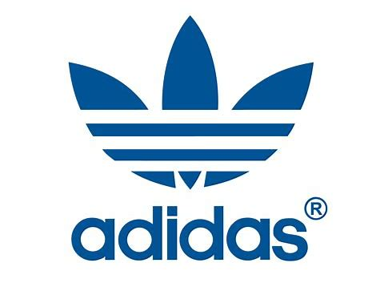
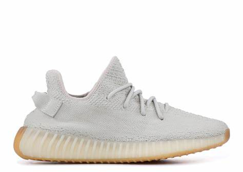
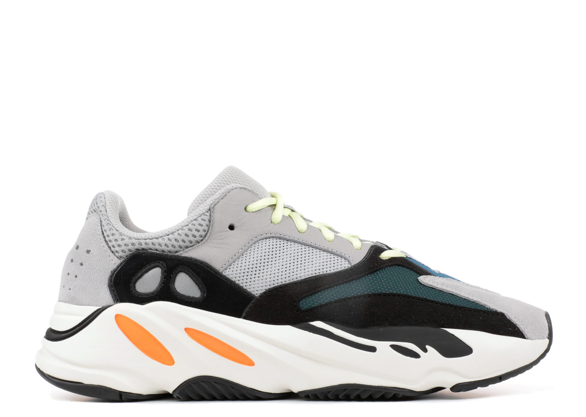
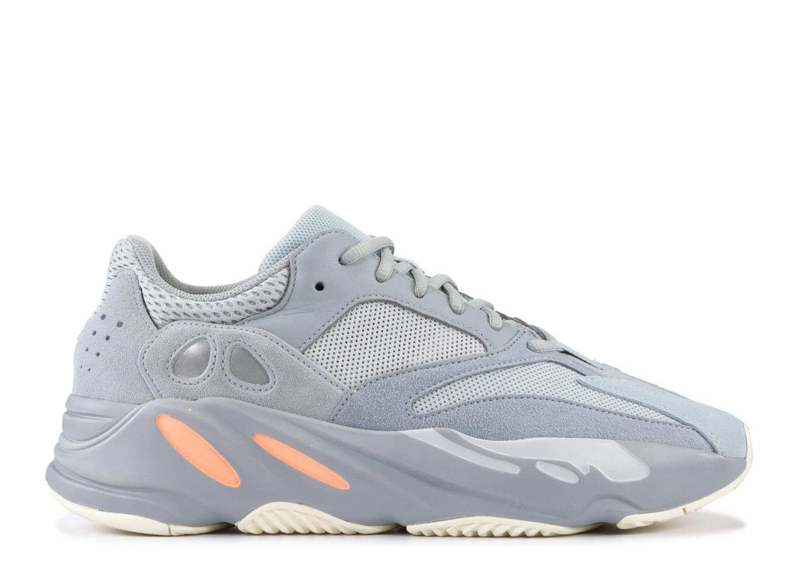
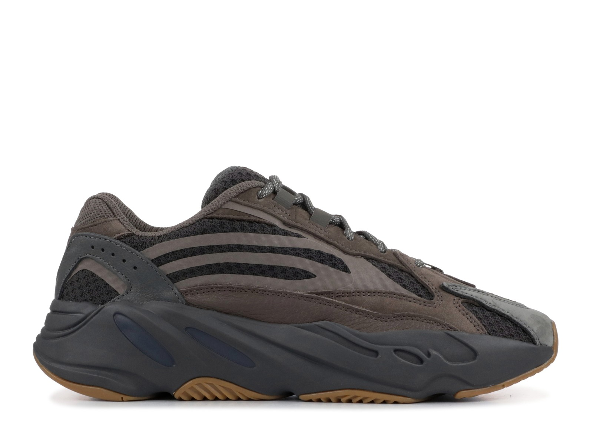

POIZON
POIZON|  | YEEZY |  |
| Home | Yeezy's History | Yeezy 350 | Yeezy 500 | Yeezy 700 | Sign up |
|---|
The adidas Yeezy 700 has been a nearly endless headline piece this year. As Kanye’s first foray into the chunky “dad” shoe world, the silhouette has grown to become one of the most coveted sneakers of 2018.

The adidas Yeezy Boost 700 “Waverunner” first made its debut to the sneaker world back on August 12th, 2017. After several months of leaks and early photos, the silhouette surfaced for preorder on Kanye’s YeezySupply store. However, unlike your usual adidas Yeezy release, they didn’t sell out in seconds. Instead, pairs were available for presale in a full-size run for several hours, allowing time for consumers to make up their mind on the new silhouette. Like many sneakers, not everyone was initially sold on the chunky “dad” design, though, and what followed was one of the most intense debates in sneaker history.
|  |  |
|---|
Despite the hate, the Yeezy Boost 700 would prevail. Released at the time as a YeezySupply exclusive, the first few sales of the Yeezy Boost 700 established the market price at well over $1,000, even reaching as high as $2,000. This caught many sneakerheads off guard, not realizing how hard to get the 700 would be, and miscalculating how much the fans were willing to pay for it.
| Blogroll: POIZON |
| Contact Information: (+86) 18988779219 |
| All Content Copyright © 2019, Aaron Li |